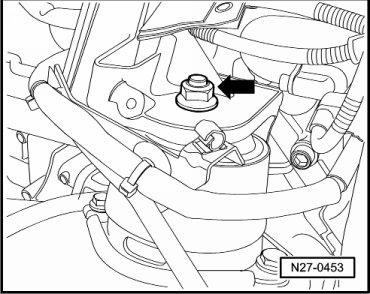
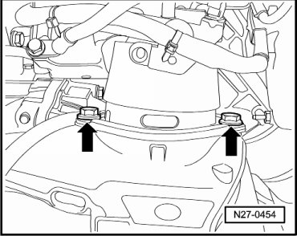
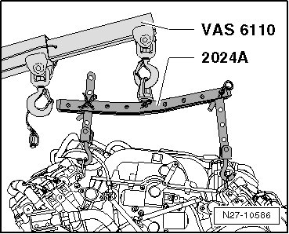
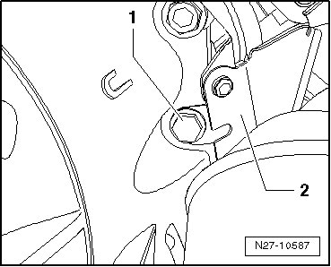
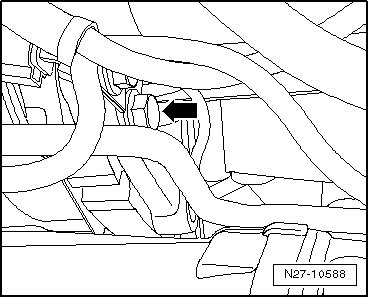
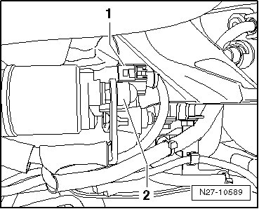

Engine Code BAR
Starter
Special tools, testers and auxiliary items required
• Torque Wrench (V.A.G 1331/)
• Torque Wrench (V.A.G 1332/)
• Shop crane (VAS 6100)
• Lifting tackle (2024 A)
Removing
- Remove the engine --> Engine Mechanical, Fuel Injection and Ignition 10 Removal and Installation.
- Remove nut - arrow - from engine mount.

- Remove screws - arrows -.

- Engage Lifting Tackle (2024 A) in lifting eyes on cylinder heads.

- Hook the lifting tackle (2024 A) into the shop crane (VAS 6100).
- Lift the engine with the shop crane (VAS 6100).
- Remove engine mount.
- Remove three bolts for engine mount bracket at engine block.
- Move engine bracket slightly to side.
• Engine bracket must not be removed completely. Ground lines remain connected.
- Remove upper starter bolt - arrow - on transmission side.
- Remove heat shield - 2 - from wiring retainer.

- Remove the lower bolt for the starter - arrow - on the engine side.

- Remove starter from transmission housing, being careful of wires.
- Disconnect electrical connection - 1 -.
- Remove protective cap - 2 - and nut beneath.

- Remove starter.
Installing
Install in reverse order of removal, noting the following:
- Tighten the fasteners to the specification --> [ Starter ] [1][2]Specifications.